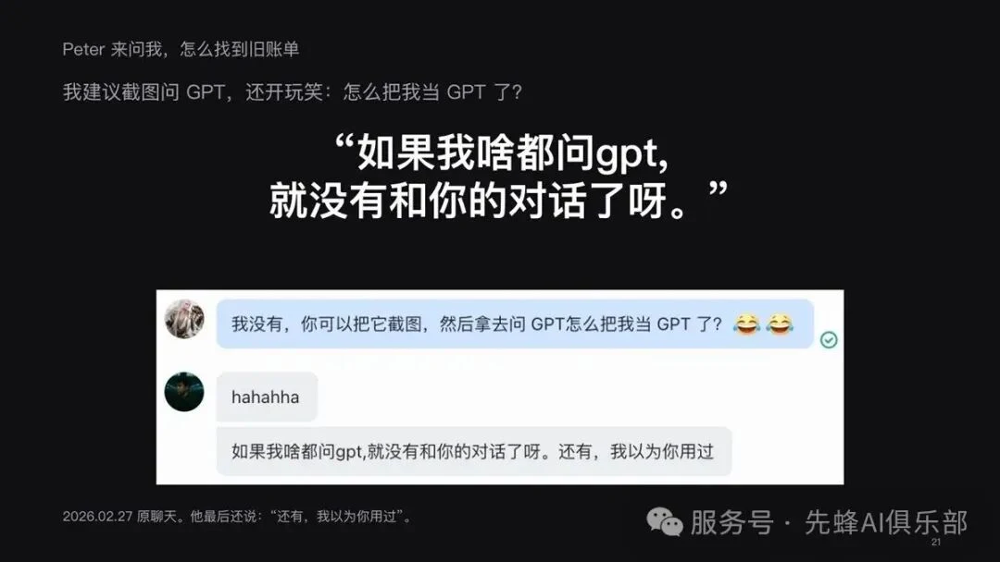
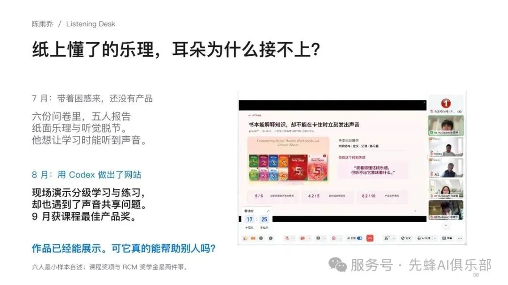
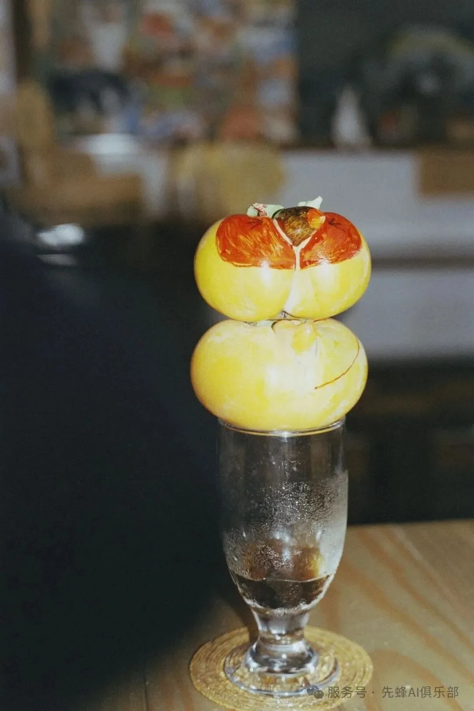
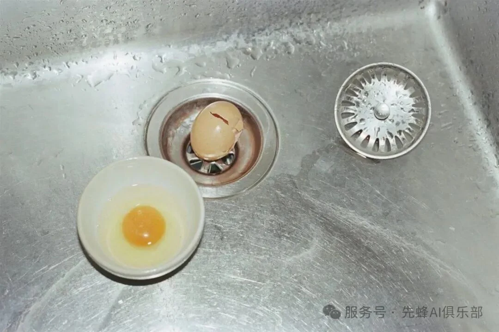
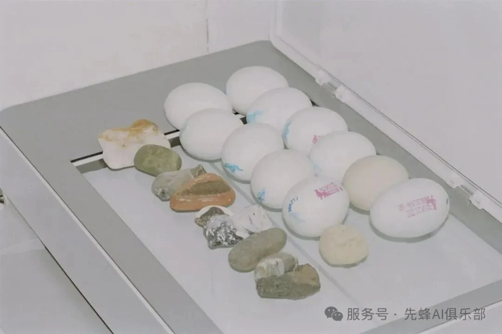
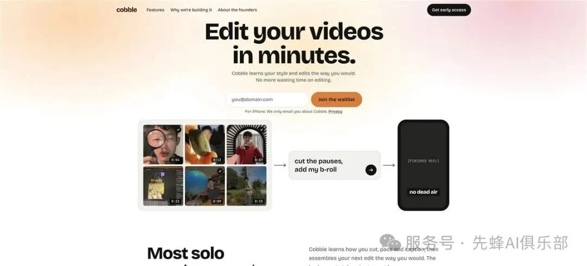
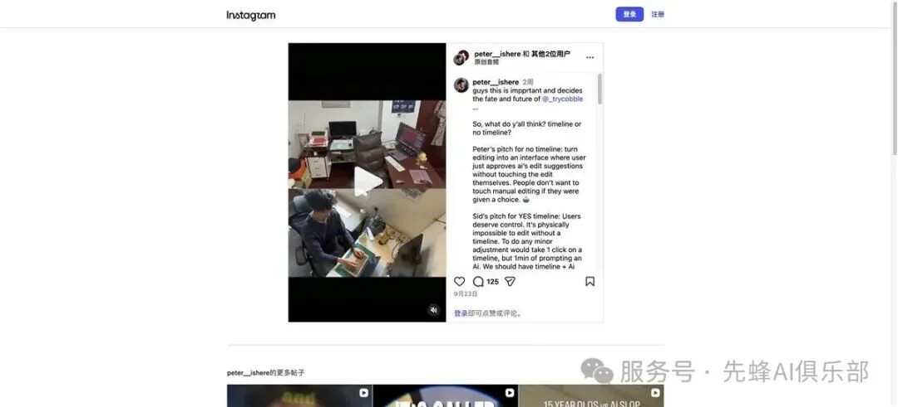
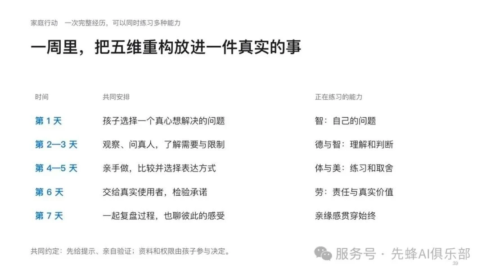

2026年10月15日，先蜂AI俱乐部 K6 线下活动以“AI时代的新德智体美劳”为题，邀请家长、教育者与AI实践者坐到一起。主讲人周品（品哥）没有把讨论停在“孩子该不该用AI”，而是把问题推进了一步。
这场分享从五种能力出发，再回到德智体美劳的日常实践。现场对谈由品哥主持，Ally Zhang（张彤）与王咏刚共同参与。一个清晰的共识贯穿始终：风险并非来自AI本身，而来自孩子是否还在问题、判断、试错、选择与关系中持续参与。
K6 / VIDEO RECAP
先回到现场：AI时代的新德智体美劳
第一条视频先带我们进入 K6 的现场，也把这次讨论最重要的问题摆在面前：当AI越来越会回答，我们还要把什么留给孩子？
01 / WHAT GETS SKIPPED
当答案变快，成长的过程不能被省略
过去，一个问题往往要经历搜索、比较、推导和验证；现在，问一句就可能得到结构完整、语气笃定的答案。效率提高了，但如果孩子的动作只剩下“提问—接收—关闭页面”，观察、怀疑、修正和表达就可能一起被跳过。
品哥借费曼父亲教孩子观察小鸟的故事提醒大家：知道一种鸟的名字，不等于真正理解了它。AI可以给出解释，但孩子仍需要走到窗边，看一眼，再问一句“为什么”。教育真正要守住的，不是让孩子故意吃苦，而是让他拥有亲自参与、亲自判断的机会。
FIVE HUMAN CAPACITIES
五种能力，是AI时代更具体的成长坐标
好奇心
答案出来后，是否愿意再观察一步、追问一步？
同理心
真人不同意时，是否愿意理解对方的位置？
意志力
卡住时，把“这一版不行”看成信息，继续调整。
审美力
面对候选，能否说清楚为什么选择这一张？
亲缘感
一个小问题出现时，我们是否仍愿意一起经历，而不是把每次求助都转交给AI？
VIDEO 02 / PETER & TOKENS
当孩子用掉了 token，却没有得到想要的结果
品哥从 Peter 使用 AI token 的真实经历讲起：成本花出去了、尝试失败了，父母要立刻接管，还是把这次失误变成一次判断、承担与继续调整的机会？
02 / THE COURAGE TO ADJUST
真正的意志力，不是硬撑，而是继续调整
活动中，品哥分享了15岁 Peter 的真实经历。Peter 围绕AI学习产品与创业，在项目中学习UI、用户行为与编程，也把产品带到真实用户面前。一次误发布发生后，成人没有立刻代为收拾，而是先问他准备怎么做，再把测试说明、联系方式与后续修正变成具体行动。
这比“不要犯错”更接近真实成长：承认失误，理解影响，补上沟通，然后继续完成交付。AI可以加速制作与试错，但责任感只有在真实后果和真实反馈中才能长出来。

KINSHIP / 亲缘感
问题解决了，对话也可能结束了
Peter 来问品哥怎样找到一张旧账单。品哥建议他截图问 GPT，还开玩笑说：“怎么把我当 GPT 了？”Peter 的回答却很认真：“如果我什么都问 GPT，就没有和你的对话了呀。”
一个很小的求助，可能不只是为了拿到答案，也是孩子在向父母靠近。AI当然可以更快地解决账单问题，但如果每一次求助都被立刻转交给工具，问题解决了，这轮关系中的共同经历也结束了。
亲缘感也包括允许孩子纠正我们。品哥追问女儿 Silvia 的项目进展时，她提醒父亲：“你不要总是预设我没有在做。”父母愿意放下预设、听完解释，孩子才会感到自己不是被管理，而是被理解。
03 / BACK TO REAL LIFE
从五维能力，重新回到德智体美劳
德，是在分歧中先听完、复述需要、协商边界；智，是拆开AI的说法、找到原出处、允许自己改变判断；体，是亲自试一次，在身体反馈中调整节奏；美，是到场观看、允许意外，并为自己的选择给出理由；劳，是听见真实需要，交付一个别人能用的版本，再接住反馈继续改。
智，不只是得到答案，而是知道自己为什么相信。陈雨乔发现，纸上懂了的乐理，耳朵却未必接得上。他做了六份问卷，其中五位学习者都提到纸面乐理与听觉脱节。带着这个具体问题，他用 Codex 做出 ListeningDesk，现场演示分级学习与练习，也暴露了声音共享的问题。作品后来获得课程最佳产品奖，但比奖项更重要的是：从困惑、访谈、制作到暴露问题，他没有跳过验证。

美，不是让AI替自己挑一张“好看的”。Silvia 从时装训练走向摄影。她去寻找朱鹮，却没有得到预期的照片；继续行走时，她注意到船窗、海面、卖柿子的店，最后甚至在杯子上遇见那只“鸟”。后来，她把每天打开的冰箱当成舞台，在厨房、水槽、石头与鸡蛋之间发展自己的视觉语言。审美就在这些意外里形成：先到场，再观看，然后说清楚自己为什么选择。



劳，也不只是把东西做出来。Peter 与伙伴从“剪一条视频可能花六小时”的真实麻烦出发探索 Cobble。公开开发中，他们也遇到产品分歧：让AI全自动，还是把时间轴和控制权留给创作者？一个产品真正进入现实，必须听见用户需要、作出取舍、交付能用的一版，并接住反馈继续改。


VIDEO 03 / ALLY
孩子不愿意聊？先别急着讲道理
周品的主题分享告一段落。接下来，Ally 把亲子沟通带回一个更轻、更真实的入口：少一点审问，多一点好奇；大道理聊不动，就先从孩子愿意说的小事，甚至从“八卦”开始。
FROM SHARING TO CONVERSATION
教育首先发生在关系里
Ally 的分享提醒我们：孩子愿意说，父母才有机会理解他的选择；父母愿意听，规则和边界才可能真正进入对话。十分钟的交流不需要变成一次检查，先从孩子正在玩的、正在看的、正在尝试的事情开始，让对话保留一点轻松，也保留彼此不同意的空间。
VIDEO 04 / WANG YONGGANG
AI离你很远？也许，只是你还没有看见
王咏刚从技术与现实的交界处回应：AI早已进入学习、创作与决策。与其把它想象成遥远的未来，不如先识别它已经在哪里，又改变了什么。
04 / FIVE QUESTIONS
对谈没有标准答案，但留下五个值得继续聊的问题
品哥把五个问题交给王咏刚与 Ally。对谈没有追求一句“标准答案”，而是不断把抽象判断拉回孩子的学习、选择、失败和家庭关系。结合现场对谈与整场分享，我们把其中最值得带走的部分整理如下。
01 · AI：工具，还是另一种智慧？
与其急着给AI归类，不如先看人与它如何相处。它可以像工具一样被调用，也会以对话、建议和反例的形式参与思考。真正重要的不是它“像不像人”，而是孩子是否仍然保有目标、判断和最后的责任。AI提出方案，孩子要能问：它依据什么？适合谁？后果由谁承担？
02 · AI越来越会回答，孩子还需要费力学什么？
需要学习那些不能靠“收到一个答案”完成的事：观察真实世界、拆开论证、寻找原出处、在身体里练习、面对真人的不同意见、把作品交给用户。费力本身不是目的，不能被省略的是形成能力的过程。答案可以更快，理解、判断和责任不能外包。
03 · 父母的经验，会不会成为孩子的边界？
会，如果经验总以“我早就知道答案”的方式出现。Peter 误发布产品时，品哥先问他准备怎么办，而不是立刻代为收拾；Silvia 被追问进展时，也直接提醒父亲不要预设她没有行动。父母的经验更适合成为脚手架：提供边界、提醒风险、追问下一步，但把选择和修正的空间留给孩子。
04 · 不盲从权威与AI，怎样形成独立判断？
先把完整而笃定的回答拆成几个可以核查的说法，再找到原出处；也要追问评价标准——你说“好”，是在什么前提下好？最后允许证据改变自己的判断。查证不是为了抬杠，而是知道自己为什么相信；独立判断也不是永不改变，而是能够说明依据，并在新证据出现时修正。
05 · 每天十分钟，怎样让孩子愿意和你聊？
不要把十分钟变成一次盘问。可以从孩子正在使用的AI、正在玩的游戏、刚发生的一件小事开始，请他讲一个真实例子，甚至请他教你一次。Ally给出的入口很轻：聊不动大道理，就先聊八卦。对话从好奇开始，而不是从评价开始；孩子感到自己被听见，才更可能继续说。
王咏刚也提醒大家，AI并非离生活很远，很多时候只是我们还没有看见它已经嵌入学习、创作和决策。对父母而言，重要的不是假装比孩子更懂工具，而是愿意和孩子一起识别它、讨论它，并共同承担使用它的后果。
05 / TAKE IT HOME
带回家的，不是一套管控清单
先了解孩子怎样使用AI。不要先评价，邀请他自愿分享一个最近的真实例子。
再进入孩子的真实生活。问问他在玩什么游戏、做到什么水平、和谁一起玩；如果可以，请他带你玩一次。
然后讨论态度，而不只问使用时长。孩子是在质疑、拥抱、警惕还是驾驭AI？为什么会这样想？
最后，挑一件真实的事一起完成。AI先给提示，孩子亲自验证；资料与权限由孩子参与决定；成品交给真实的人使用，并听完反馈。

AI时代，父母不需要比孩子更懂所有工具，也不需要在每次对话中给出正确答案。更重要的是，让孩子知道：他可以来问，可以不同意，可以失败，也可以在一次次真实参与中形成自己的判断。
当AI越来越会回答，我们要留给孩子的，正是那些不能外包的成长经历。
让好奇心，带我们走得更远。
本页依据俱乐部提供的 K6 全文归档整理，保留正文、配图与视频说明。活动于 2026 年 10 月 15 日举行；公众号回顾发表于 10 月 19 日。四段视频仅保留封面与原文观看入口，未转存视频文件。